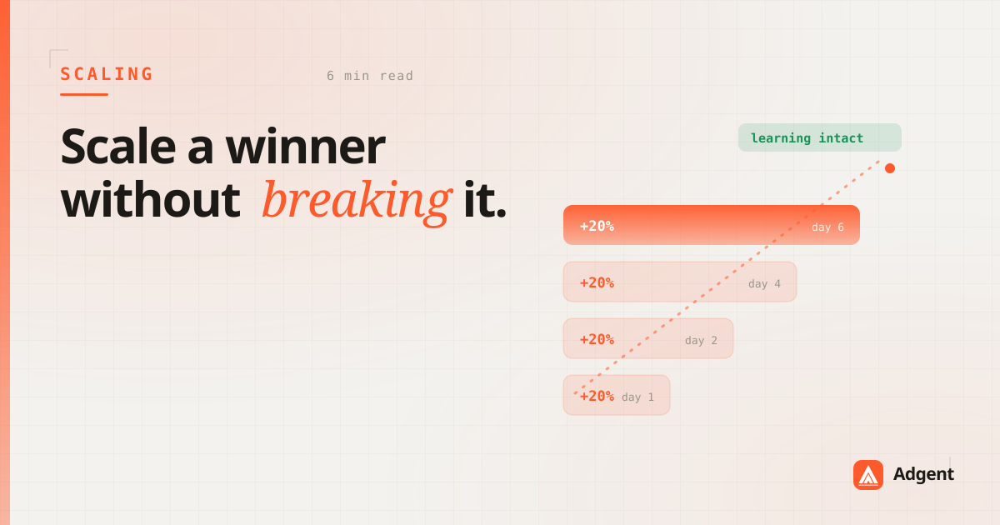
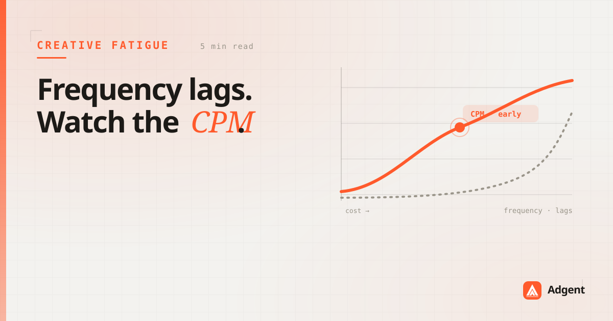
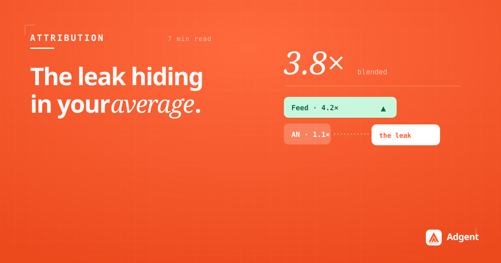
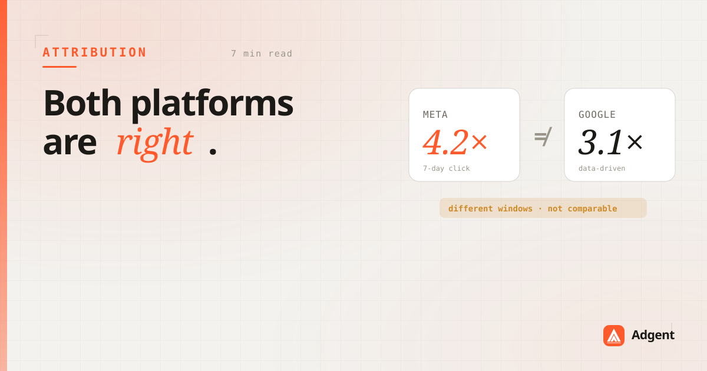

Field notes on Meta Ads, attribution, and what it takes to turn a wall of metrics into a decision worth making.

The 20% rule, learning-phase resets, and why the budget you add matters less than how fast you add it.
Read
By the time frequency tells you an audience is tired, the cost already moved. The earlier signal is hiding in your CPM curve.
Read
A look at the design principle behind every brief: conclusion first, evidence underneath, nothing you didn't need.
Read
A blended ROAS of 3.8× can hide a placement bleeding budget at 1.1×. How to find the leak inside a healthy-looking number.
Read
Campaign budget optimization isn't always the answer. A practical decision tree for which structure to reach for.
Read
Two platforms report ROAS. Neither is wrong, and they still can't be compared. What to fix before you move budget between them.
ReadField notes on Meta Ads and attribution — the same conclusion-first style as the product. Want them in your inbox? Drop us a line.
Email us and we'll add you — and show you what Adgent would find in your account.
Email usA real person reads every note.